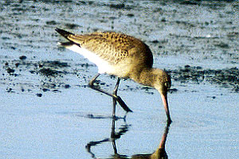

These photographs accompany records that have been recently submitted to the committee. This record has been ACCEPTED.

Hudsonian Godwit
Limosa haemastica
9 Sep 97, Eel River Wildlife Area, HUM 1997-148
© 1997 Sean McAllister
Back to CBRC Rare Bird Photos